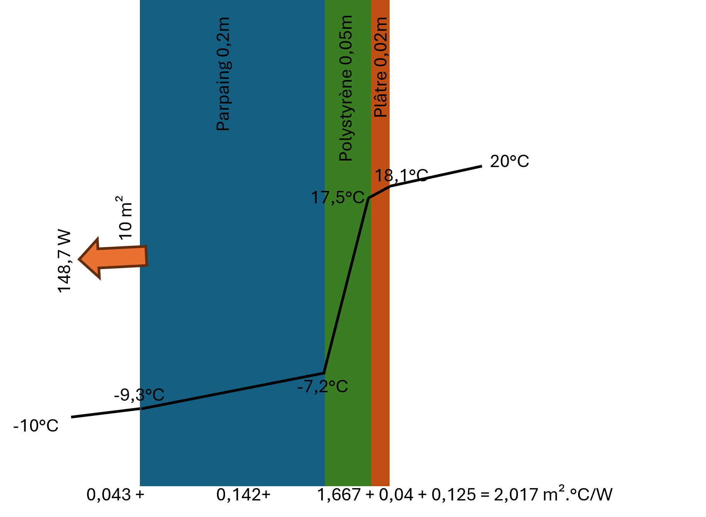

Mur composite
Usage
{kind=link}

from HeatTransfer import CompositeWall
# Créer un mur composite
wall = CompositeWall.Object(he=23, hi=8, Ti=20, Te=-10, A=10)
# Ajouter des couches (de l'extérieur vers l'intérieur)
wall.add_layer(thickness=0.20, material='Parpaings creux')
wall.add_layer(thickness=0.05, material='Polystyrène')
wall.add_layer(thickness=0.02, material='Plâtre')
# Calculer le transfert
wall.calculate()
# Afficher les résultats
print(f"Résistance totale: {wall.R_total:.3f} m².K/W")
print(f"Flux thermique: {wall.Q:.2f} W")
print(wall.df)
Results
Résistance totale: 2.018 m².K/W
Flux thermique: 148.66 W
Épaisseur (m) Matériau Conductivité (W/m.°C) Résistance (m².°C/W) Temperature input (°C) Temperature output (°C) Q (W) A (m²)
0 NaN Air extérieur NaN 0.043478 -10.000000 -9.353644 148.661889 10
1 0.20 Parpaings creux 1.40 0.142857 -9.353644 -7.229903 148.661889 10
2 0.05 Polystyrène 0.03 1.666667 -7.229903 17.547079 148.661889 10
3 0.02 Plâtre 0.50 0.040000 17.547079 18.141726 148.661889 10
4 NaN Air intérieur NaN 0.125000 18.141726 20.000000 148.661889 10
Le calcul retourne :
Résistance thermique totale (
R_total) [m²·K/W]Flux thermique (
Q) [W]DataFrame détaillé : Pour chaque couche
Épaisseur [m]
Matériau
Conductivité thermique [W/m·K]
Résistance thermique [m²·K/W]
Temperature input [°C]
Temperature output [°C]
Flux thermique [W]
Surface [m²]
Paramètres possibles
Matériaux disponibles :
'Glass wool'(λ = 0.034 W/m·K)'Liège expansé aggloméré au brai'(λ = 0.048 W/m·K)'Liège expansé pur'(λ = 0.043 W/m·K)'Parpaings creux'(λ = 1.4 W/m·K)'Pierre calcaire dure (marbre)'(λ = 2.9 W/m·K)'Pierre calcaire tendre'(λ = 0.95 W/m·K)'Pierre granit'(λ = 3.5 W/m·K)'Polystyrène expansé'(λ = 0.047 W/m·K)'Polystyrène'(λ = 0.03 W/m·K)'Polystyrène extrudé'(λ = 0.035 W/m·K)'Polyurethane foam'(λ = 0.03 W/m·K)'Plâtre'(λ = 0.5 W/m·K)'Verre'(λ = 1.0 W/m·K)'Air'(Lame d’air with résistance according to épaisseur)
Épaisseurs lame d’air et résistances associées :
5-7 mm : R = 0.11 m²·K/W
7-9 mm : R = 0.13 m²·K/W
9-11 mm : R = 0.14 m²·K/W
>11 mm : R = 0.16 m²·K/W
Explication du model
Ce model calcule le transfert thermique à travers un mur multicouche.
Le calcul se base on :
Résistances en série : Les résistances thermiques de chaque couche s’additionnent
Convection aux surfaces : Résistances convectives intérieure et extérieure
Conduction in les matériaux : Résistance fonction de l’épaisseur et de la conductivité
Le model allows :
Calculer la thermal resistance totale
Déterminer le flux thermique traversant le mur
Obtenir le profil de temperature à travers les couches
Analyser la contribution de chaque couche